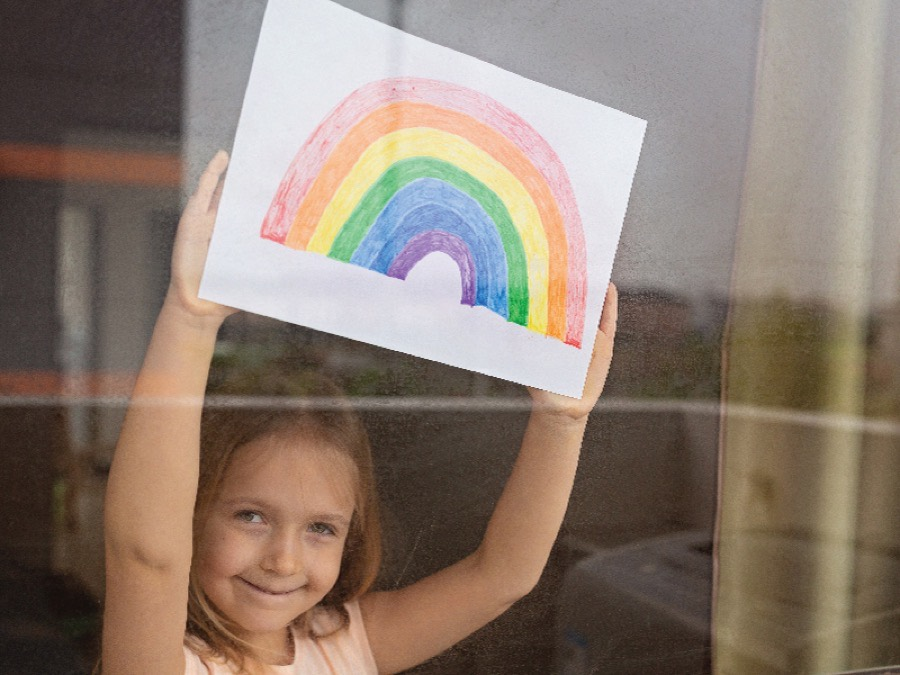

Ενημέρωση για γονείς
Άρθρα
Τα άρθρα περιλαμβάνουν ενημερωτικά κείμενα για συχνά παιδιατρικά θέματα και απορίες των γονέων. Δεν αντικαθιστούν την ιατρική εξέταση ή την εξατομικευμένη συμβουλή του παιδιάτρου.
-

7 tips για…όνειρα γλυκά!
-

Εποχιακές αλλεργίες στα παιδιά. Τι πρέπει να γνωρίζουν οι γονείς;
-

Συμπτώματα COVID-19 στα παιδιά: Τι νέο γνωρίζουμε
-

Τα συμπληρώματα διατροφής δε μειώνουν τα συμπτώματα της νόσου COVID-19
-

Πώς θα χαρούμε με τα παιδιά μας το χιόνι με ασφάλεια!
-

Η στοματική υγιεινή σε βρέφη και παιδιά συνοψίζεται σε μία φράση: Βούρτσισμα από το πρώτο δόντι!
-
Ανατροπή, τα παιδιά μεταδίδουν τελικά τον κορωνοϊό. Νέα μελέτη αλλάζει τα δεδομένα!
-

Κορωνοϊός και σχολεία! Ποιοι οι κίνδυνοι από την επαναλειτουργία τους. Μεταδίδουν τελικά τα παιδιά τη νόσο;
-

Κορωνοϊός – 1 στα 17 παιδιά μπορεί να αρρωστήσει σοβαρά!
-

Κορωνοϊός – πώς θα κρατήσω το παιδί μου ασφαλές!
-

Γρίπη! Πώς θα προφυλάξουμε το παιδί μας
-
Πόσο συχνά μπορώ να κάνω μπάνιο το μωρό μου;
-

Θηλασμός ή «ξένο γάλα»; Τι πρέπει να κάνω στο μαιευτήριο;
-
Μπορούν τα προβιοτικά να βοηθήσουν στη θεραπεία των κολικών; Δεδομένα από νέα μελέτη.
-

Θάνατος από πιθανό κρούσμα διφθερίτιδας στην Ελλάδα. Δεν υπάρχει λόγος ανησυχίας, αν τα παιδιά είναι εμβολιασμένα.
-

Η νέα φίλη μας η ίωση – Συνέντευξη στο Ladylike.gr
-

Η νόσηση από Ιλαρά μπορεί να «διαγράψει» το ανοσοποιητικό σύστημα και να το επαναφέρει στην κατάσταση που ήταν στη βρεφική ηλικία!
-
Νέες οδηγίες για την κατανάλωση υγρών από τα παιδιά: Νερό και γάλα πρέπει να χρησιμοποιούνται σχεδόν αποκλειστικά.
-

4 κοινές λανθασμένες αντιλήψεις σχετικά με τον ήλιο
-

Να κάνω το εμβόλιο της γρίπης στο μωρό μου; Ποιοι πρέπει να εμβολιάζονται εναντίον της γρίπης;
-

Πώς να μην κολλήσει το παιδί μου ψείρες; Να χρησιμοποιήσω κάποιο από τα προϊόντα πρόληψης που κυκλοφορούν;
-

Πότε να ξεκινήσει το παιδί μου παιδικό σταθμό;
Κλείστε ραντεβού με τον ιατρό.
Στείλτε αίτημα ηλεκτρονικά ή καλέστε απευθείας το ιατρείο που σας εξυπηρετεί.
Φόρμα ραντεβού